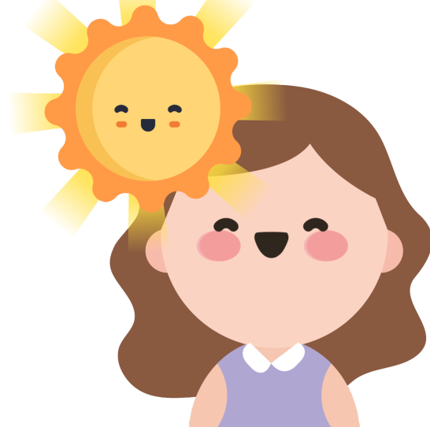
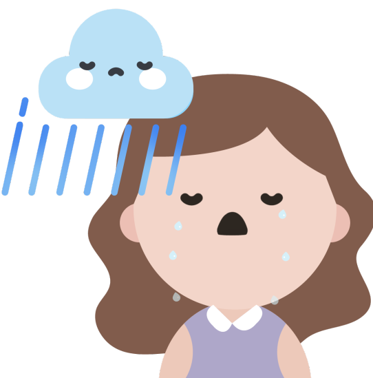
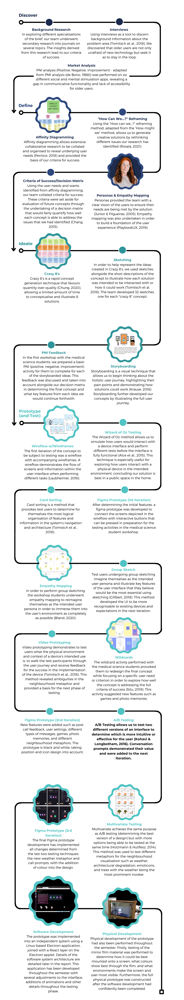

Design Brief: Keep in Touch The World Health Organisation includes the ability of an individual to cope with the normal stresses of life as one part of mental health (World Health Organisation, 2018). The COVID-19 pandemic has placed stresses on people beyond what is normal, in particular those who are in high-risk groups, including older adults (Armitage and Nellums, 2020; Mesa Vieira et al., 2020).
In the absence of an effective clinical treatment and lower levels of vaccinations than would allow risk-free movement in the community, it has been necessary to socially engineer a response to protect those who have a high relative risk in relation to COVID-19 including maintaining physical distance to reduce the spread of the virus. This response to COVID-19 places a specific stress on the mental health of people who isolate themselves physically, which often means that they are also socially isolated. Social isolation is a serious problem for older adults, and the burden of isolation has been highlighted as a source of additional stress for older adults due to COVID-19.
You are tasked with developing a concept for KiT, a communications appliance that helps older adults who have lower technological literacy, and other accessibility issues, such as a physical impairment, keep in touch with loved ones, carers and clinicians (such as a GP). Your team will iteratively design and develop a functional interactive prototype which:
The FamilySim Magic Mirror was developed to address a lack of social connection particularly for the elderly by providing them with a device which is unintrusive and can naturally integrate into their daily lives (as a mirror is a device which is walked past daily).
The Keeping in Touch brief demonstrates the struggle for the elderly to communicate with one another during the COVID-19 pandemic. This social isolation can lead to a variety of detrimental effects. For the elderly, the risk of cognitive decline increases severely when social connections and activity are limited (Nicholson, 2012). Through the COVID-19 pandemic, the popularity of applications such as like Zoom have surged as methods for keeping in touch with friends and family in the absence of physical interactions. However for older adults their needs and wants are often neglected when it comes to developing new technologies (Pedell et al, 2013). The problem brief highlights social isolation as a problem especially for the elderly living in times such as the height of the COVID-19 pandemic. Varioius online online tools have popularised as a result of the social and geographical isolation caused however according to our primary research, many of these tools are difficult to use among the elderly and therefore not utilised by them. This emphasies the need for an elderly-friendly online tool to promote communication to address the lack of social interaction.
Home The MagicMirror Family Sim has 3 main capabilities, most of which is centred around scheduling and contacting specific family members and loved ones. The experience is personalised around the users based on the interactions they make using this device.
Users can interact with their family members through the home screen in three distinct ways:
Calling another userThe process of calling another user emulates the process as it exists on a mobile device, pressing the call button and being presented with the same functions as if you were on FaceTime etc. Here a user can toggle their camera and their microphone. MagicMirror aids in facilitating conversation between family by providing "prompts" that display different questions or topics that users can answer to aid in the flow of conversation. These call prompts take up the middle of the screen and provide suggestions of conversation topics should the conversation die down. The post-call rating system is similar to similar modern call applications but conveys the quality of the conversation rather than the quality of the technical experience. A user is presented with 5 reactions, which can be used to simply describe their experience in their call with this person. This information contributes to the visualised mood value of users' avatars, depicting if the relationship between the user and the caller has been improved, maintained, or worsened.  When positive interactions are recorded, sunny, happy weather is displayed  When negative interactions (or a period of time occurs without positive interaction), gloomier stormy weather displays).
Checking Another User's CalendarA user’s calendar can be viewed when the connected user has permitted you to look at it in their own privacy settings. From here a user can view when their connected user may be busy, and also schedule a time for them to call. The main purpose of this page is to allow for users to find a time when they and their connected user is free, so that they can set a time to call. This is an alternative to calling out of the blue. From this page users can schedule a call by clicking on a date that is free, and interacting with the popup that confirms the specific time of the call. By scheduling a call, they will now receive notifications when the time of their call draws near. Sending a Message to Another User A user can choose from two different types of messages; a text message and a voice message, to send to their connected user.

Our team followed the traditional design process: the Double Diamond Design Approach. Using a suite of UX design methods, we explored our areas of interest in the brief, refined the scope of the project in our problem definition, ideated from the differently framed problem definitions, and prototyped and tested our final solution to satisfaction.
